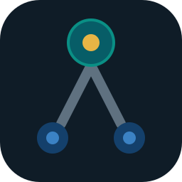

switch-relay
A local CLI that delegates coding work to per-task models and keeps every run, cost and review status in a ledger. Runs on your OpenCode setup. No cloud, no accounts, no telemetry.
Purpose
Claude, Codex and GPT are expensive and not needed for every task. switch-relay lets one model act as the parent that plans and reviews, while it hands the bulk work to an arbitrary child model you pick per task — typically a cheaper one. Whatever runs is written to a local ledger so you can see what was done, what it cost, and what still needs a human review.
Model flow
Each child is spawned with its own --model, so the orchestration is model-agnostic: a task can go to whichever model is cheapest that's good enough for it.
How it runs
switchrelay runstarts (or attaches to) an OpenCode server and spawns a worker for one task.- The worker runs on the model you specify, under the
--roleyou choose (read-only or edits the repo). - On exit, the run is written to the ledger with status, session id and cost; completed workers are marked
needs-review. switchrelay serveserves a dashboard athttp://127.0.0.1:4180to review health and the run ledger.
switch-relay never merges, pushes or deploys work on its own. That stays with the parent model or with you.
Install
# Node.js 22+ and OpenCode with a provider configured
npm install --global switch-relay
switchrelay check
Delegate a task
switchrelay run \ --repo /path/to/repository \ --title "Add error handling to the API client" \ --role builder \ --model openrouter/deepseek/deepseek-v4-flash-0731 \ --parent openrouter/anthropic/claude-... \ --prompt "Add try/catch around every fetch call. Touch nothing else."
Use --role researcher when the worker should investigate and report without editing files, or builder when it should edit the repo.
Reference
| Command | Notes |
|---|---|
check | Reports OpenCode connectivity and version. |
run | Runs one worker, then records it in the ledger. Flags: --title, --prompt, --role, --model, --parent, --parent-run, --repo, --state-dir. |
record | Manually adds a run to the ledger (e.g. work done outside the tool). Flags: --title, --role, --model, --parent, --status, --cost, --repo. |
serve | Serves the dashboard and health endpoint. Flags: --repo, --port (default 4180), --opencode-port (default 4096), --state-dir. |
State
The ledger lives in ~/.switchrelay/state.json (override with --state-dir or SWITCHRELAY_STATE_DIR). Writes are atomic and single-writer locked, safe under concurrent processes.
Scope
This is a thin dispatch + review ledger on top of OpenCode. It is not an IDE, a host, or a CI pipeline, and it will not deploy your code.